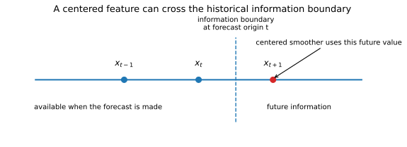
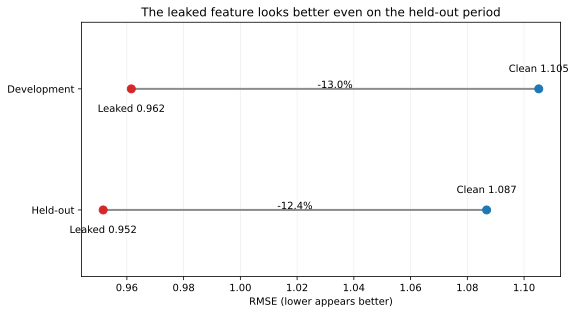

Look-Ahead Bias and Data Leakage
When future information slips into a historical test
QM003 · Data & Research Design · Foundation
Core idea. A historical test intended to mimic an ex-ante decision is valid only if every input, transformation, model choice, and decision uses information that would have been available when that decision was supposed to occur.
Use it for. Auditing forecasting pipelines, machine-learning validation, financial backtests, and any research design that tries to reconstruct a past decision.
It does not establish. That every optimistic result is caused by leakage, or that a clean information boundary makes a model useful, stable, or economically valuable.
The Question
A backtest can be chronologically split and still use information from the future.
At each historical decision point, did any part of the analysis know something that the real decision maker could not have known yet?
That question is broader than checking whether the target column appears in the training set. Leakage can enter through features, preprocessing, model selection, sample construction, revisions, or repeated use of the final test period (Kaufman et al. 2012).
The Information Boundary

Suppose a forecast is made at origin \(t\). Let \(\mathcal{I}_t\) denote the information available by that origin. A valid forecasting procedure can be written schematically as
\[ \widehat{y}_{t+h\mid t}=f_t(\mathcal{I}_t). \]
The requirement applies to the whole procedure \(f_t\), not just the final regression or machine-learning estimator. If a feature transformation, tuning rule, or sample filter uses information outside \(\mathcal{I}_t\), the final model inherits that contamination.
This is why a useful audit asks not only what data entered the model? but also:
- when was each raw input observable?
- when were transformation parameters estimated?
- where were features selected?
- where were hyperparameters chosen?
- which observations influenced the reported performance measure?
Four Common Leakage Paths
1. Future-aware feature construction
A trailing transformation uses observations available at or before the forecast origin. A centered or forward-looking transformation may use observations that have not occurred yet.
This often happens quietly when a smoothing, filtering, interpolation, or imputation routine is applied to the full series before the historical evaluation loop is constructed.
2. Preprocessing outside the permitted split
Scaling, principal components, feature screening, outlier rules, imputation parameters, and other data-dependent transformations should be estimated inside the information boundary that applies to the model being evaluated.
The numerical effect of a particular preprocessing leak can be small, large, or even neutral for some model classes. The validity issue is whether the procedure used information it was not supposed to use.
3. Tuning or selecting on the final test period
If the final test is inspected, the model is changed, and the same test is checked again, that test has become part of development. The same logic applies when hundreds of strategies, features, or hyperparameters are ranked by their performance on one supposedly final backtest.
This is a selection problem even if each individual candidate was fit only on earlier data. Repeated optimization of a noisy performance estimate can produce selection bias (Cawley and Talbot 2010). In finance, large strategy searches create the same basic concern for backtest overfitting (Bailey et al. 2014).
4. Incorrect availability or vintage assumptions
A date printed next to an observation is not always the date on which the observation became known. Macroeconomic series may be released with lags and revised later. Financial databases can also contain restated accounting values, corrected records, or current classifications that differ from what was available historically.
A genuine real-time design therefore needs an explicit availability rule or vintage structure rather than assuming that a chronological row split is sufficient (Stark and Croushore 2002).
Worked Illustration: A Held-Out Test Cannot Repair a Leaky Feature
The example is synthetic and deterministic. It is designed to isolate one mechanism: a centered feature that includes a future predictor value. The numerical size of the apparent improvement is not evidence about how large leakage effects usually are in real financial or economic data.
Consider a persistent predictor process
\[ x_t=0.85x_{t-1}+u_t, \]
and a next-period target
\[ y_{t+1}=0.80x_{t+1}+v_{t+1}. \]
At forecast origin \(t\), \(x_t\) is observable but \(x_{t+1}\) is not.
We compare two one-variable forecasting models. Both are estimated on the same development sample and then evaluated on the same untouched held-out sample.
The clean feature is simply
\[ z_t^{\text{clean}}=x_t. \]
The leaked feature is a centered three-point smoother,
\[ z_t^{\text{leak}}=\frac{x_{t-1}+x_t+x_{t+1}}{3}. \]
The second feature looks innocuous if it is created by a generic smoothing function before the split. But it contains \(x_{t+1}\), which lies beyond the information boundary at forecast origin \(t\).
| Evaluation sample | Forecasts | Clean RMSE | Leaked RMSE | Leaked vs. clean |
|---|---|---|---|---|
| Development | 219 | 1.105 | 0.962 | -13.0% |
| Held-out | 100 | 1.087 | 0.952 | -12.4% |

The important point is not that the leaked model fits better. The held-out sample does not make the comparison valid, because the same future-aware feature construction is applied at every held-out origin.
This is different from ordinary overfitting. A flexible model can overfit while respecting the information boundary. Leakage means the procedure has access to information that the intended historical decision did not have.
Hands-on Lab: Move the Feature Across the Boundary
The optional lab uses the same synthetic series and compares three features:
- clean: \(x_t\);
- centered: \((x_{t-1}+x_t+x_{t+1})/3\); and
- future: \(x_{t+1}\) itself.
The exercise makes the information boundary visible. As more future information enters the feature, the reported historical RMSE can improve even though the forecasting problem has become less realistic.
Run it yourself. Start with the lab guide. For a self-contained copy, use the complete lab bundle. Direct source: Python · R.
Do not interpret the ordering of these three synthetic features as a general law about leakage magnitude. The lesson is procedural: performance is not comparable when the competing pipelines are allowed to see different information.
Leakage in Cross-Validation
The same principle applies when cross-validation replaces a fixed holdout. If feature selection or parameter tuning is performed using all observations before the folds are created, information from each validation fold has already influenced the model-development process.
Varma and Simon show why the full model-building algorithm, including parameter tuning, must be repeated inside the evaluation loop when cross-validation is being used to estimate predictive error (Varma and Simon 2006). The general lesson is simple:
The unit being evaluated is the entire model-building procedure, not a partially precomputed model object.
For time-series forecasting, a second issue is chronology. Random folds may be appropriate for some exchangeable prediction problems, but they do not reproduce a historical forecasting exercise when future observations can enter the training side of a fold. In that setting, the validation design must respect the deployment-time information boundary.
Common Mistakes
1. Splitting after feature engineering
Creating all features on the full dataset and only then dividing train and test can leak future information through smoothing, imputation, scaling, selection, or aggregation.
Safer rule: define the historical boundary first, then ask which feature operations are permitted inside it.
2. Treating the timestamp as the availability date
The observation period and the release date can differ. A macroeconomic value labeled “March” may not have been available during March, and the value stored today may include later revisions.
3. Reusing the final test until the result looks acceptable
Once test performance affects model changes, the test is no longer untouched. Keep a new final evaluation set, use a nested development process, or label the analysis as exploratory.
4. Performing feature selection outside cross-validation
Selecting variables once using all outcomes and then cross-validating only the final estimator gives the held-out folds information about themselves. Feature selection belongs inside the training portion of each fold when the goal is unbiased evaluation of the full selection-and-fit procedure (Varma and Simon 2006).
5. Assuming every chronological split is a real-time test
Chronology prevents some forms of leakage, but it does not automatically handle publication lags, revisions, backfills, stale classifications, or post-event variables.
6. Calling every data problem “leakage”
Leakage is an information-boundary concept. Other problems—such as measurement error, weak identification, omitted variables, or an unrepresentative sample—can invalidate a result for different reasons. Keeping the diagnosis precise helps determine the correct fix.
A Practical Leakage Audit
For every historical forecast, trade, classification, or allocation decision, record:
| Audit item | Question |
|---|---|
| Decision time | When is the prediction or portfolio decision assumed to be made? |
| Target | What future outcome is being predicted or evaluated? |
| Raw inputs | Which observations were actually available by the decision time? |
| Transformations | Were fitted preprocessing parameters estimated only from admissible data? |
| Feature construction | Do any lags, windows, smoothers, joins, or imputations reach beyond the boundary? |
| Model selection | Were features, models, or hyperparameters chosen without using the final evaluation outcomes? |
| Data vintage | Are revisions and release lags handled consistently with the stated historical exercise? |
| Evaluation | Has the reported test period remained outside the development loop? |
A good implementation makes these boundaries explicit in code rather than relying on memory or naming conventions.
Implementation Pattern
A historical pipeline that respects the information boundary can be summarized as:
for origin in forecast_origins:
available = data_available_by(origin)
preprocessing = fit_preprocessing(available)
features = build_features(available, preprocessing)
model = select_and_fit_model(features)
forecast = model.predict(features_available_at(origin))
store(origin=origin, target=origin + horizon, forecast=forecast)
score_only_after_targets_are_observed(stored_forecasts)The functions are schematic. The key requirement is that every data-dependent operation must be evaluated against the same historical information boundary.
How to Interpret a Clean Result
Removing leakage makes the evaluation eligible to answer the intended historical question. It does not guarantee a useful model.
A clean backtest can still fail because of:
- ordinary estimation error;
- model overfitting inside the development sample;
- structural instability;
- weak economic signal;
- transaction costs and implementation frictions;
- multiple testing across a broader research program; or
- a sample that does not represent the future environment.
Leakage control is therefore a validity condition, not evidence of performance by itself.
Used in SlackQuant Research
Beyond Average Accuracy: Statistical Distinguishability and Temporal Concentration in Data-Rich Macroeconomic Forecasting uses a dated FRED-MD snapshot and a repeated pseudo-out-of-sample protocol. QM003 explains why those information-set and timing choices matter: a chronological evaluation is credible only to the extent that the inputs and transformations match the information assumed to be available at each forecast origin.
Reproducibility
The accompanying materials include the synthetic series, feature-construction code, figures, and a hands-on lab in Python and R. The clean, centered, and future-aware feature comparisons can be reproduced directly from the definitions used in the article.